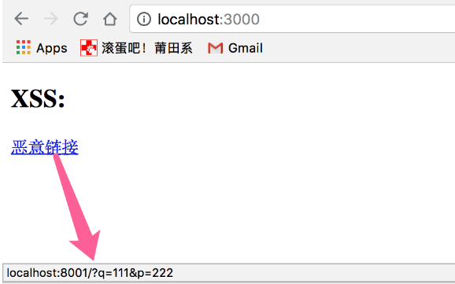

在 Web 安全领域中，XSS 和 CSRF 是最常见的攻击方式。
XSS
XSS，即 Cross Site Script，跨站脚本攻击。
指的是攻击者在网站上注入恶意的客户端代码，通过恶意脚本对客户端网页进行篡改，从而在用户浏览网页时，对用户浏览器进行控制或者获取用户隐私数据的一种攻击方式。将一些隐私数据像 cookie、session 发送给攻击者或者将受害者重定向到一个由攻击者控制的网站，在受害者的机器上进行一些恶意操作。
XSS分类
XSS攻击分为3类：反射型（非持久型）、存储型（持久型）、基于DOM
反射型
诱使用户点击一个恶意链接，或者提交表单，将用户数据发送给服务端，如下：

链接指向一个地址，此时请求会发送到服务器，服务器接受请求，获取到用户的数据且可以在客户端浏览器执行脚本（如注入能获取用户隐私数据的脚本）
存储型
将用户输入的非法数据存放在服务器中，当其他用户请求数据时，会执行该用户上传的非法脚本。
例如攻击者在论坛中发表包含js代码的文章或者评论，其他访问者浏览该页面时都会执行这段脚本
基于DOM
基于 DOM 的 XSS 攻击是指通过恶意脚本修改页面的 DOM 结构，是纯粹发生在客户端的攻击。
与反射型XSS很类似，可以诱使用户向攻击者发送请求然后劫持用户的请求并执行修改DOM的脚本以完成攻击者的目的。
XSS攻击的防范
使用HttpOnly防止劫取Cookie
设置了HttpOnly=true的Cookie无法通过js获取，通过设置HttpOnly可以防止攻击者窃取用户的Cookie信息，这些Cookie只能在服务端被使用。
输入检查
对用户输入的数据要进行检查、过滤和转义。对于不可信任的字符和标签进行过滤和转义，一般可以检查数据中是否包括
<>等特殊字符，若有则可以将其过滤或者编码后再发送。输出检查
服务器在输出用户的数据前对该数据进行检查，同样对敏感字符和标签进行过滤和编码再输出到用户端。
CSRF
CSRF，即 Cross Site Request Forgery，跨站请求伪造，是一种劫持受信任用户向服务器发送非预期请求的攻击方式。
一般为攻击者借助用户的Cookie骗取服务器信任，伪造请求发给服务器以再未授权的情况下执行一些敏感操作。
浏览器的 Cookie 策略
Cookie 是服务器发送到用户浏览器并保存在本地的一小块数据，它会在浏览器下次向同一服务器再发起请求时被携带并发送到服务器上。Cookie 主要用于以下两个方面：
- 会话状态管理（如用户登录状态、购物车、游戏分数或其它需要记录的信息）
- 个性化设置（如用户自定义设置、主题等）
浏览器持有的Cookie分为两种：
- Session Cookie(会话期 Cookie)：会话期 Cookie 是最简单的Cookie，它不需要指定过期时间（Expires）或者有效期（Max-Age），它仅在会话期内有效，浏览器关闭之后它会被自动删除。
- Permanent Cookie(持久性 Cookie)：与会话期 Cookie 不同的是，持久性 Cookie 可以指定一个特定的过期时间（Expires）或有效期（Max-Age）。
通过 Cookie 进行 CSRF 攻击
站点a，当用户删除帖子时发起get请求：
1 | http://www.c.com:8002/content/delete/:id |
当用户登录后会设置关于用户认证信息的Coookie。
攻击者准备一个网站：
1 | <p>CSRF 攻击者准备的网站：</p> |
此时用户访问攻击者的网站时会发起一个删除id为87343帖子的请求，当用户重新加载a网站时会发现请求已经完成，帖子被删除了
CSRF 攻击的防范
验证码
CSRF攻击通常是在用户不知情时发起网络请求，在请求前要求用户输入验证码会强制与用户进行交互。
Referer Check
Http头中有个Referer字段，记录了该Http请求的来源地址，服务器通过检查该字段的值来判断是否为源网站发出的合法请求。该方法还能防止图片盗链行文。
Token验证
CSRF能成功的原因在于攻击者能伪造用户的请求，用户的验证信息都存在于Cookie中，在Http中以参数的形式添加一个随机产生的Token，攻击者无法获取，通过服务器验证Token来验证用户可以防止攻击者伪造请求。
参考：